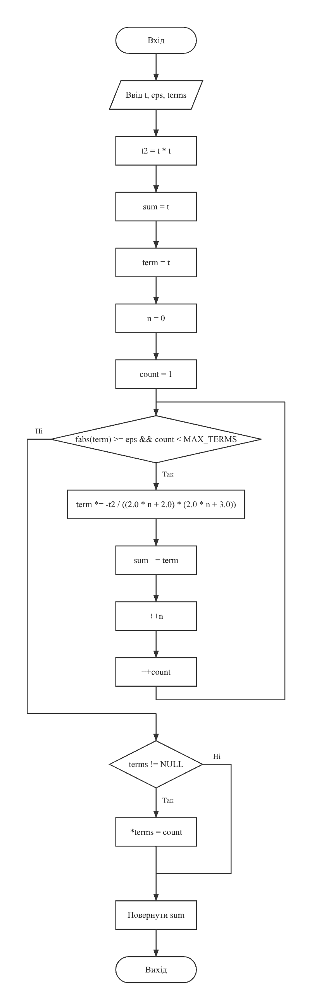
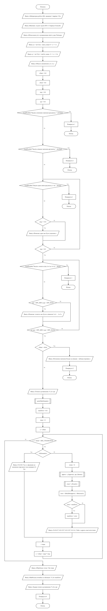
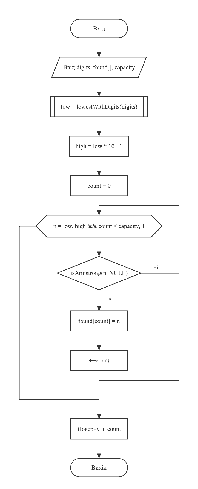
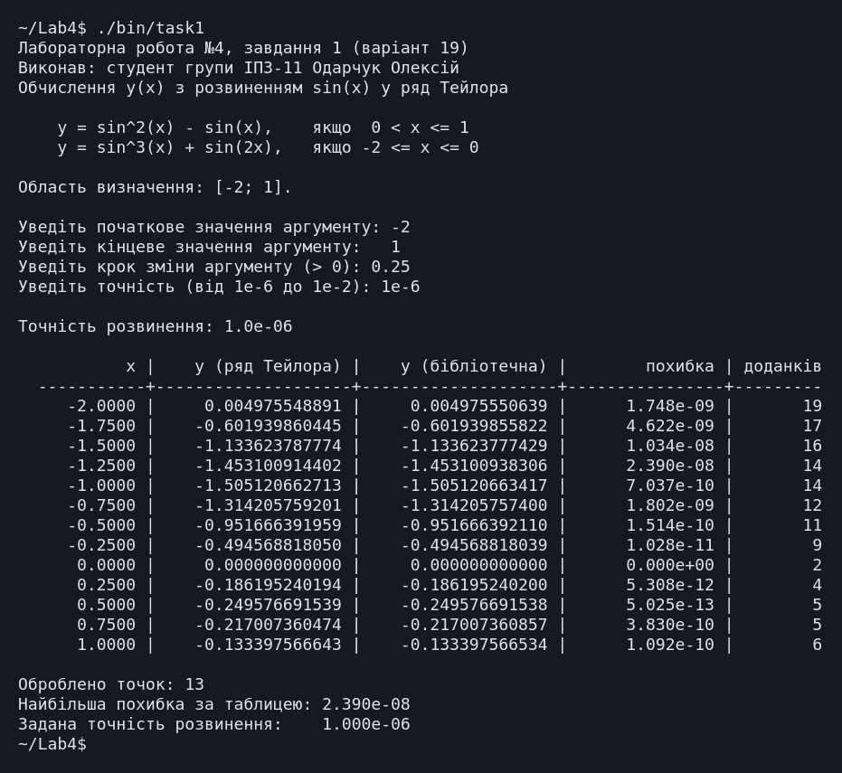
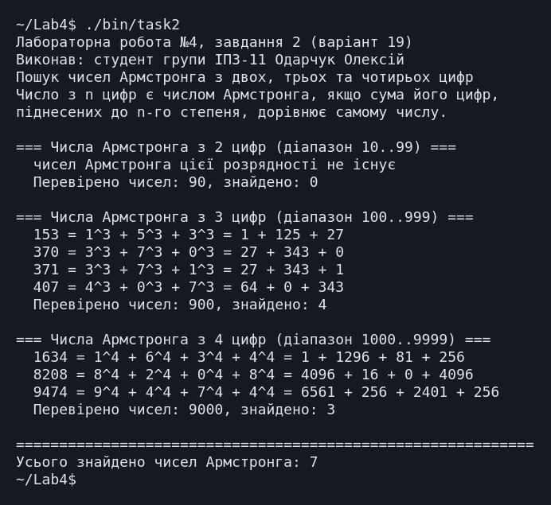
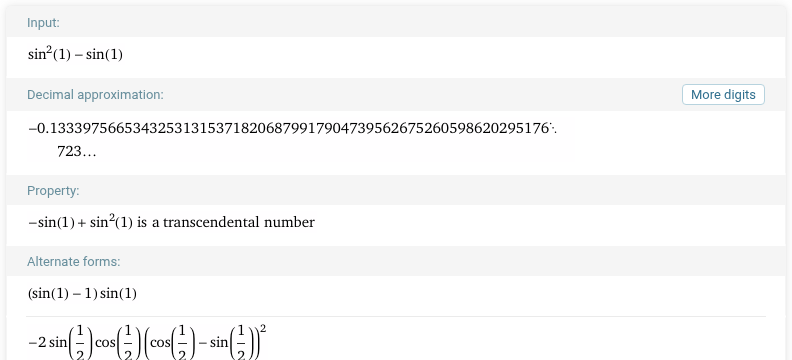
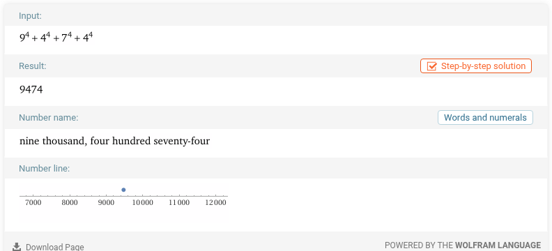

← До переліку лабораторних робіт
Лабораторна робота №4. Рекурентні співвідношення. Степеневі ряди
Варіант 19. Виконав: Одарчук Олексій, КНУ імені Тараса Шевченка, ФІТ, група ІПЗ-11. C17, gcc
1. Мета роботи
- Вивчити особливості циклічних обчислювальних процесів з розгалуженнями.
- Опанувати технологію рекурентних обчислень.
- Навчитися розробляти алгоритми та програми розвинення функцій у ряди.
2. Умова задачі
Завдання 1
Обчислити значення функції y, розвинувши функцію sin(x) у ряд Тейлора. Визначити похибку обчислення (таблиця 4.2, варіант 19):
| sin²(x) - sin(x), якщо 0 < x ≤ 1
y = |
| sin³(x) + sin(2x), якщо -2 ≤ x ≤ 0
Аргумент змінюється від заданого з клавіатури мінімального значення до максимального із заданим кроком; точність розвинення вводиться з клавіатури в діапазоні 10⁻⁶...10⁻²; функції обчислення факторіалу та степеня не використовувати; похибка визначається як різниця абсолютних значень наближеного та стандартного обчислення функції.
Завдання 2
Натуральне число із n цифр є числом Армстронга, якщо сума його цифр, піднесених до n-го степеня, дорівнює самому числу (наприклад, 153 = 1³ + 5³ + 3³ = 1 + 125 + 27). Визначити всі числа Армстронга, що складаються з двох, трьох та чотирьох цифр (таблиця 4.3, варіант 19).
3. Аналіз задачі та теоретичне обґрунтування
Завдання 1. Розвинення sin(x) у ряд
Ряд Маклорена (окремий випадок ряду Тейлора при розвиненні в околі нуля) для синуса:
sin(t) = t - t³/3! + t⁵/5! - t⁷/7! + ... загальний доданок: a(n) = (-1)ⁿ · t^(2n+1) / (2n+1)!
Факторіал і степінь окремо обчислювати заборонено, тому доданок виражено через попередній:
a(n+1) -t² ────── = ────────────────────── a(n) (2n + 2)·(2n + 3) початковий доданок: a(0) = t
Ряд для синуса знакозмінний з монотонно спадними за модулем членами, тому похибка часткової суми не перевищує модуля першого відкинутого доданка, і умова припинення "модуль доданка менший за eps" гарантує задану точність.
Область визначення функції - [-2; 1]; точка x = 0 належить
другій гілці. Для аргументів поза цим проміжком програма повідомляє, що функцію не
визначено.
Поточний аргумент обчислюється як xStart + steps·step, а не накопиченням
x += step, щоб не накопичувати похибку додавання.
Завдання 2. Числа Армстронга
Для числа з n цифр перевіряється рівність:
n-цифрове число N = d₁ⁿ + d₂ⁿ + ... + dₙⁿ, де dᵢ - цифри числа N
Цифри виділяються операціями rest % 10 і rest / 10, степінь
обчислює власна функція intPower() послідовним множенням.
Бібліотечна pow() тут непридатна: вона повертає дійсне число, і для цілих
показників можливе значення виду 124,999999997, яке спотворило б порівняння.
Перевіряються всі числа кожної розрядності (90 + 900 + 9000), тож знайдений перелік повний.
Література: Ковалюк Т.В. Алгоритмізація та програмування. - Львів.: "Магнолія 2006", 2024. - 400 с.; Deitel P., Deitel H. C++ How to Program. Pearson Education, Inc. Hoboken, New Jersey. 2017. - 3015 p.
4. Блок-схема алгоритму



Схеми побудовано з текстів програм за допомогою rombik (rombik.app) відповідно до ДСТУ 19.701-90 (ISO 5807).
5. Текст програми
Завдання 1 - task1.c
/*==============================================================================
Лабораторна робота №4. Завдання 1. Варіант 19.
Тема: рекурентні співвідношення, степеневі ряди.
Умова (таблиця 4.2, варіант 19): обчислити значення функції y, розвинувши
функцію sin(x) у ряд Тейлора. Визначити похибку обчислення.
| sin^2(x) - sin(x), 0 < x <= 1
y = |
| sin^3(x) + sin(2*x), -2 <= x <= 0
Вимоги методичних вказівок:
- параметр функції змінюється від заданого з клавіатури мінімального
значення до максимального із заданим кроком;
- точність розвинення вводиться з клавіатури в діапазоні 1e-2 ... 1e-6;
- для розвинення створити власну функцію, що обчислює суму ряду за
рекурентним співвідношенням;
- функції обчислення факторіалу та степеня НЕ використовувати;
- похибка - різниця абсолютних значень наближеного та стандартного
обчислення функції;
- стандартне значення обчислювати бібліотечною функцією.
Виконав: Одарчук Олексій, КНУ імені Тараса Шевченка, ФІТ, група ІПЗ-11.
Компілятор: gcc -std=c17
==============================================================================*/
#include <stdio.h>
#include <stdbool.h>
#include <math.h>
/* Межі області визначення функції за умовою варіанта. */
const double X_MIN = -2.0;
const double X_MAX = 1.0;
/* Межі припустимої точності розвинення за умовою варіанта. */
const double EPS_MIN = 1e-6;
const double EPS_MAX = 1e-2;
/* Допуск порівняння аргументу з межами, щоб точки на межі не відкидались
через похибку округлення. */
const double ARG_TOLERANCE = 1e-12;
/* Страховка від зациклення, якщо ряд не досягає заданої точності. */
const int MAX_TERMS = 1000;
/*------------------------------------------------------------------------------
utf8Width - ширина рядка в символах, а не в байтах.
У кодуванні UTF-8 кирилична літера займає два байти, тому специфікатор
формату виду %-16s, який рахує байти, вирівнює заголовки таблиць
неправильно. Функція рахує лише початкові байти символів: у продовжувальних
байтах старші біти дорівнюють 10 у двійковій системі.
Параметри: s [вхідний] - рядок у кодуванні UTF-8.
Повертає : кількість символів рядка.
------------------------------------------------------------------------------*/
int utf8Width(const char *s)
{
int width = 0;
for (const unsigned char *p = (const unsigned char *)s; *p != '\0'; ++p)
{
/* Продовжувальний байт UTF-8 має вигляд 10xxxxxx: маска 0xC0 лишає
два старші біти, і якщо вони не дорівнюють 10, це початок символу. */
if ((*p & 0xC0) != 0x80)
{
++width;
}
}
return width;
}
/*------------------------------------------------------------------------------
printPadded - вивести рядок, доповнивши його пропусками до заданої ширини.
Параметри:
s [вхідний] - рядок, що виводиться;
width [вхідний] - потрібна ширина поля в символах;
left [вхідний] - true: вирівнювання ліворуч; false: праворуч.
Локальні змінні:
pad - кількість пропусків, які треба додати.
------------------------------------------------------------------------------*/
void printPadded(const char *s, int width, bool left)
{
const int pad = width - utf8Width(s);
if (!left)
{
for (int i = 0; i < pad; ++i)
{
putchar(' ');
}
}
printf("%s", s);
if (left)
{
for (int i = 0; i < pad; ++i)
{
putchar(' ');
}
}
}
/*------------------------------------------------------------------------------
sinTaylor - обчислити sin(t) розвиненням у ряд Тейлора (ряд Маклорена).
Ряд: sin(t) = t - t^3/3! + t^5/5! - t^7/7! + ...
Рекурентне співвідношення. Позначимо a(n) - доданок з номером n (n = 0, 1, 2...):
a(n) = (-1)^n * t^(2n+1) / (2n+1)!
Тоді
a(n+1) -t^2
------ = ------------------------
a(n) (2n+2) * (2n+3)
Початковий доданок a(0) = t.
Отже ані факторіал, ані піднесення до степеня окремо не обчислюються:
кожен наступний доданок отримується з попереднього сталою кількістю
множень і одним діленням, незалежно від номера доданка.
Параметри:
t [вхідний] - аргумент синуса;
eps [вхідний] - точність: підсумовування триває, доки модуль
доданка не стане меншим за eps;
terms [вихідний] - адреса лічильника доданків; може бути NULL,
якщо кількість доданків не потрібна.
Повертає: наближене значення sin(t).
Локальні змінні:
sum - накопичувана сума ряду;
term - поточний доданок ряду;
n - номер поточного доданка;
t2 - квадрат аргументу (обчислюється один раз).
------------------------------------------------------------------------------*/
double sinTaylor(double t, double eps, int *terms)
{
const double t2 = t * t;
double sum = t; /* a(0) = t */
double term = t;
int n = 0;
int count = 1;
while (fabs(term) >= eps && count < MAX_TERMS)
{
/* Рекурентний перехід a(n) -> a(n+1). */
term *= -t2 / ((2.0 * n + 2.0) * (2.0 * n + 3.0));
sum += term;
++n;
++count;
}
if (terms != NULL)
{
*terms = count;
}
return sum;
}
/*------------------------------------------------------------------------------
yApprox - обчислити значення кусково-заданої функції y(x), використовуючи
наближене (рядом Тейлора) значення синуса.
Параметри:
x [вхідний] - аргумент функції;
eps [вхідний] - точність розвинення в ряд;
terms [вихідний] - адреса лічильника доданків ряду (сумарно за виклик).
Повертає: значення y(x).
Передумова: x належить області визначення [-2; 1]; перевірку виконує
функція inDomain() перед викликом.
Локальні змінні:
s - наближене значення sin(x);
s2x - наближене значення sin(2x);
n1, n2 - кількість доданків у відповідних розвиненнях.
------------------------------------------------------------------------------*/
double yApprox(double x, double eps, int *terms)
{
int n1 = 0;
int n2 = 0;
if (x > 0.0)
{
/* Гілка 0 < x <= 1: y = sin^2(x) - sin(x) */
const double s = sinTaylor(x, eps, &n1);
*terms = n1;
return s * s - s;
}
/* Гілка -2 <= x <= 0: y = sin^3(x) + sin(2x) */
const double s = sinTaylor(x, eps, &n1);
const double s2x = sinTaylor(2.0 * x, eps, &n2);
*terms = n1 + n2;
return s * s * s + s2x;
}
/*------------------------------------------------------------------------------
yExact - обчислити те саме значення y(x) через бібліотечну функцію sin().
Використовується як еталон для визначення похибки.
Параметри: x [вхідний] - аргумент функції.
Повертає : значення y(x), обчислене стандартними засобами.
------------------------------------------------------------------------------*/
double yExact(double x)
{
if (x > 0.0)
{
const double s = sin(x);
return s * s - s;
}
const double s = sin(x);
return s * s * s + sin(2.0 * x);
}
/*------------------------------------------------------------------------------
inDomain - чи належить аргумент області визначення функції [-2; 1].
Параметри: x [вхідний] - аргумент функції.
Повертає : true - функцію визначено в точці x.
Порівняння виконується з невеликим допуском, щоб точки на межі діапазону
не відкидались через похибку округлення при обчисленні аргументу.
------------------------------------------------------------------------------*/
bool inDomain(double x)
{
return x >= X_MIN - ARG_TOLERANCE && x <= X_MAX + ARG_TOLERANCE;
}
/*------------------------------------------------------------------------------
skipLine - відкинути залишок рядка введення разом із символом '\n'.
------------------------------------------------------------------------------*/
void skipLine(void)
{
int c = getchar();
while (c != '\n' && c != EOF)
{
c = getchar();
}
}
/*------------------------------------------------------------------------------
readDouble - прочитати дійсне число з контролем коректності введення.
Параметри:
prompt [вхідний] - текст запрошення;
value [вихідний] - адреса змінної для введеного числа.
Повертає : true - число прочитано; false - вхідні дані вичерпано.
------------------------------------------------------------------------------*/
bool readDouble(const char *prompt, double *value)
{
for (;;)
{
printf("%s", prompt);
const int scanned = scanf("%lf", value);
if (scanned == EOF)
{
return false;
}
skipLine();
if (scanned == 1)
{
return true;
}
printf("Помилка: очікується дійсне число. Повторіть.\n");
}
}
/*------------------------------------------------------------------------------
printTableHeader - вивести заголовок таблиці значень функції: аргумент,
наближене та стандартне значення, похибка, доданки ряду.
------------------------------------------------------------------------------*/
void printTableHeader(void)
{
printf(" ");
printPadded("x", 10, false);
printf(" | ");
printPadded("y (ряд Тейлора)", 18, false);
printf(" | ");
printPadded("y (бібліотечна)", 18, false);
printf(" | ");
printPadded("похибка", 14, false);
printf(" | ");
printPadded("доданків", 8, false);
printf("\n");
printf(" -----------+--------------------+--------------------"
"+----------------+---------\n");
}
/*------------------------------------------------------------------------------
Головна функція. Читає межі та крок зміни аргументу, точність розвинення,
табулює функцію і виводить таблицю значень з похибками.
Локальні змінні:
xStart, xEnd, step - межі та крок зміни аргументу;
eps - точність розвинення в ряд;
x - поточне значення аргументу;
approx, exact - наближене та еталонне значення функції;
error - похибка обчислення;
terms - кількість доданків ряду;
steps - номер поточного кроку табулювання;
maxError - найбільша похибка за всю таблицю.
------------------------------------------------------------------------------*/
int main(void)
{
printf("Лабораторна робота №4, завдання 1 (варіант 19)\n");
printf("Виконав: студент групи ІПЗ-11 Одарчук Олексій\n");
printf("Обчислення y(x) з розвиненням sin(x) у ряд Тейлора\n\n");
printf(" y = sin^2(x) - sin(x), якщо 0 < x <= 1\n");
printf(" y = sin^3(x) + sin(2x), якщо -2 <= x <= 0\n\n");
printf("Область визначення: [-2; 1].\n\n");
double xStart = 0.0;
double xEnd = 0.0;
double step = 0.0;
double eps = 0.0;
if (!readDouble("Уведіть початкове значення аргументу: ", &xStart))
{
return 1;
}
if (!readDouble("Уведіть кінцеве значення аргументу: ", &xEnd))
{
return 1;
}
do
{
if (!readDouble("Уведіть крок зміни аргументу (> 0): ", &step))
{
return 1;
}
if (step <= 0.0)
{
printf("Помилка: крок має бути додатним.\n");
}
} while (step <= 0.0);
do
{
if (!readDouble("Уведіть точність (від 1e-6 до 1e-2): ", &eps))
{
return 1;
}
if (eps < EPS_MIN || eps > EPS_MAX)
{
printf("Помилка: точність має бути в діапазоні 1e-6 ... 1e-2.\n");
}
} while (eps < EPS_MIN || eps > EPS_MAX);
if (xStart > xEnd)
{
printf("\nПочаткове значення більше за кінцеве - таблиця порожня.\n");
return 2;
}
printf("\nТочність розвинення: %.1e\n\n", eps);
printTableHeader();
double maxError = 0.0;
int steps = 0;
double x = xStart;
/* Цикл табулювання. Аргумент обчислюється через лічильник кроків замість
накопичення x += step, щоб похибка додавання не накопичувалась від кроку
до кроку. */
while (x <= xEnd + ARG_TOLERANCE)
{
if (!inDomain(x))
{
printf(" %10.4f | %s\n", x,
"функцію не визначено (аргумент поза межами [-2; 1])");
}
else
{
int terms = 0;
const double approx = yApprox(x, eps, &terms);
const double exact = yExact(x);
/* Похибка за умовою варіанта - різниця абсолютних значень
наближеного та стандартного обчислення функції. */
const double error = fabs(fabs(approx) - fabs(exact));
if (error > maxError)
{
maxError = error;
}
printf(" %10.4f | %18.12f | %18.12f | %14.3e | %8d\n", x, approx, exact,
error, terms);
}
++steps;
x = xStart + steps * step;
}
printf("\nОброблено точок: %d\n", steps);
printf("Найбільша похибка за таблицею: %.3e\n", maxError);
printf("Задана точність розвинення: %.3e\n", eps);
return 0;
}
Завдання 2 - task2.c
/*==============================================================================
Лабораторна робота №4. Завдання 2. Варіант 19.
Тема: цикли з розгалуженням, комбінаторні задачі.
Умова (таблиця 4.3, варіант 19): натуральне число із n цифр є числом
Армстронга, якщо сума його цифр, піднесених до n-го степеня, дорівнює
самому числу (наприклад, 153 = 1^3 + 5^3 + 3^3 = 1 + 125 + 27).
Визначити всі числа Армстронга, що складаються з двох, трьох та
чотирьох цифр.
Степінь обчислюється за рекурентним співвідношенням (послідовним
множенням у цілій арифметиці), без бібліотечної функції pow().
Виконав: Одарчук Олексій, КНУ імені Тараса Шевченка, ФІТ, група ІПЗ-11.
Компілятор: gcc -std=c17
==============================================================================*/
#include <stdio.h>
#include <stdbool.h>
/* Розмір масиву для знайдених чисел однієї розрядності. Чисел Армстронга
з двох, трьох і чотирьох цифр відповідно 0, 4 і 3. Межа масиву в мові C має бути сталим виразом часу компіляції,
а змінна з модифікатором const ним не є, тому розмір задано директивою
препроцесора. */
#define MAX_FOUND 16
/*------------------------------------------------------------------------------
intPower - піднести ціле число до натурального степеня.
Реалізує рекурентне співвідношення p(0) = 1, p(i) = p(i-1) * base,
тобто степінь накопичується послідовним множенням. Бібліотечна функція
pow() не використовується: вона працює з дійсними числами і для цілих
показників може давати результат виду 124.9999999, який після
перетворення до цілого типу (відкидання дробової частини) дав би 124
замість 125 і спотворив би порівняння.
Параметри:
base [вхідний] - основа степеня (цифра числа, 0..9);
exp [вхідний] - показник степеня (кількість цифр числа, 2..4).
Повертає: значення base у степені exp.
Локальні змінні:
result - накопичуване значення степеня.
------------------------------------------------------------------------------*/
long long intPower(int base, int exp)
{
long long result = 1;
for (int i = 0; i < exp; ++i)
{
result *= base;
}
return result;
}
/*------------------------------------------------------------------------------
digitCount - кількість цифр у десятковому записі числа.
Параметри: n [вхідний] - натуральне число.
Повертає : кількість цифр (для n = 0 повертає 1).
Локальні змінні:
count - лічильник цифр;
rest - залишок числа, що ще не оброблено.
------------------------------------------------------------------------------*/
int digitCount(long long n)
{
int count = 0;
long long rest = n;
do
{
++count;
rest /= 10;
} while (rest > 0);
return count;
}
/*------------------------------------------------------------------------------
isArmstrong - чи є число числом Армстронга.
Параметри:
n [вхідний] - число, що перевіряється;
sumOut [вихідний] - адреса змінної для суми степенів цифр;
може бути NULL.
Повертає: true - сума цифр, піднесених до степеня, що дорівнює кількості
цифр числа, збігається із самим числом.
Локальні змінні:
digits - кількість цифр числа;
sum - накопичувана сума степенів цифр;
rest - залишок числа, що ще не оброблено;
digit - чергова цифра числа.
------------------------------------------------------------------------------*/
bool isArmstrong(long long n, long long *sumOut)
{
const int digits = digitCount(n);
long long sum = 0;
long long rest = n;
while (rest > 0)
{
const int digit = (int)(rest % 10);
sum += intPower(digit, digits);
rest /= 10;
}
if (sumOut != NULL)
{
*sumOut = sum;
}
return sum == n;
}
/*------------------------------------------------------------------------------
printDigitTerms - вивести доданки розкладу числа через " + ", від старшої
цифри до молодшої: або у вигляді степенів (1^3 + 5^3 + 3^3),
або їх значеннями (1 + 125 + 27).
Параметри:
n [вхідний] - число;
asPowers [вхідний] - true: степені; false: значення степенів.
Локальні змінні:
digits - кількість цифр числа;
divisor - дільник для виділення старшої цифри;
rest - залишок числа, що ще не оброблено;
digit - чергова цифра.
------------------------------------------------------------------------------*/
void printDigitTerms(long long n, bool asPowers)
{
const int digits = digitCount(n);
/* Найстарший розряд: 10^(digits-1), обчислюється множенням. */
long long divisor = 1;
for (int i = 1; i < digits; ++i)
{
divisor *= 10;
}
long long rest = n;
for (int i = 0; i < digits; ++i)
{
const int digit = (int)(rest / divisor);
if (asPowers)
{
printf("%d^%d", digit, digits);
}
else
{
printf("%lld", intPower(digit, digits));
}
if (i < digits - 1)
{
printf(" + ");
}
rest %= divisor;
divisor /= 10;
}
}
/*------------------------------------------------------------------------------
printExpansion - вивести розклад числа Армстронга у вигляді суми степенів
окремим рядком з відступом.
Наприклад: 153 = 1^3 + 5^3 + 3^3 = 1 + 125 + 27
Параметри: n [вхідний] - число Армстронга.
------------------------------------------------------------------------------*/
void printExpansion(long long n)
{
printf(" %lld = ", n);
printDigitTerms(n, true);
printf(" = ");
printDigitTerms(n, false);
printf("\n");
}
/*------------------------------------------------------------------------------
lowestWithDigits - найменше натуральне число із заданою кількістю цифр.
Параметри: digits [вхідний] - кількість цифр.
Повертає : 10^(digits-1): 10, 100, 1000.
------------------------------------------------------------------------------*/
long long lowestWithDigits(int digits)
{
long long low = 1;
for (int i = 1; i < digits; ++i)
{
low *= 10;
}
return low;
}
/*------------------------------------------------------------------------------
scanRange - перебрати всі числа заданої розрядності й зібрати знайдені
числа Армстронга до масиву.
Параметри:
digits [вхідний] - кількість цифр (2, 3 або 4);
found [вихідний] - масив для знайдених чисел;
capacity [вхідний] - розмір масиву found.
Повертає : кількість знайдених чисел Армстронга.
Локальні змінні:
low, high - межі діапазону чисел заданої розрядності;
count - лічильник знайдених чисел.
------------------------------------------------------------------------------*/
int scanRange(int digits, long long found[], int capacity)
{
const long long low = lowestWithDigits(digits);
const long long high = low * 10 - 1; /* 99, 999, 9999 */
int count = 0;
for (long long n = low; n <= high && count < capacity; ++n)
{
if (isArmstrong(n, NULL))
{
found[count] = n;
++count;
}
}
return count;
}
/*------------------------------------------------------------------------------
Головна функція. Послідовно перебирає двоцифрові, трицифрові та
чотирицифрові числа й виводить знайдені числа Армстронга.
Локальні змінні:
total - загальна кількість знайдених чисел;
digits - поточна розрядність;
low, high - межі діапазону чисел поточної розрядності;
found - знайдені числа поточної розрядності;
count - їх кількість.
------------------------------------------------------------------------------*/
int main(void)
{
printf("Лабораторна робота №4, завдання 2 (варіант 19)\n");
printf("Виконав: студент групи ІПЗ-11 Одарчук Олексій\n");
printf("Пошук чисел Армстронга з двох, трьох та чотирьох цифр\n");
printf("Число з n цифр є числом Армстронга, якщо сума його цифр,\n"
"піднесених до n-го степеня, дорівнює самому числу.\n");
int total = 0;
for (int digits = 2; digits <= 4; ++digits)
{
const long long low = lowestWithDigits(digits);
const long long high = low * 10 - 1;
printf("\n=== Числа Армстронга з %d цифр (діапазон %lld..%lld) ===\n", digits,
low, high);
long long found[MAX_FOUND];
const int count = scanRange(digits, found, MAX_FOUND);
for (int i = 0; i < count; ++i)
{
printExpansion(found[i]);
}
if (count == 0)
{
printf(" чисел Армстронга цієї розрядності не існує\n");
}
printf(" Перевірено чисел: %lld, знайдено: %d\n", high - low + 1, count);
total += count;
}
printf("\n============================================================\n");
printf("Усього знайдено чисел Армстронга: %d\n", total);
return 0;
}
6. Результати виконання роботи
Компіляція: make (gcc -std=c17, прапорці
-Wall -Wextra -pedantic -O2). Попереджень компілятора немає.
Нижче наведено екранні копії повних прогонів програм: кожна починається з запуску програми, містить усе введення з клавіатури й увесь вивід до завершення роботи. Прогін, що не вміщується на один екран, подано кількома послідовними частинами. Протоколи всіх прогонів, зокрема додаткових наборів вхідних даних, винесено окремими файлами за посиланнями.

Повний протокол виконання (task1.txt) (повний протокол, 97 рядків)

Повний протокол виконання (task2.txt) (повний протокол, 26 рядків)
7. Аналіз достовірності результатів
Достовірність результатів перевірено порівнянням з бібліотечною функцією
sin(), ручним розрахунком і обчисленнями на калькуляторі. Для кожної
контрольної величини поруч із розрахунком наведено результат програми.
Перевірка розрахунків на калькуляторі
Нижче наведено екранні копії обчислень у калькуляторі WolframAlpha; поруч із кожною - результат програми.

Калькулятор: -0,1333975665343253...; програма: -0,133397566643 (ряд Тейлора), -0,133397566534 (бібліотечна). З бібліотечною функцією значення збігаються до всіх виведених цифр, з рядом Тейлора - з похибкою 1,1·10⁻¹⁰, меншою за задану точність.

Калькулятор: 9474; програма: 9474 у переліку знайдених. Значення збігаються.
Завдання 1. Порівняння з бібліотечною функцією
Еталон обчислюється бібліотечною функцією sin() з
<math.h>; контрольні точки перевірено також вручну.
| x | Ручний розрахунок | Ряд Тейлора (eps = 10⁻⁶) | Бібліотечна функція | Похибка |
|---|---|---|---|---|
| 1,0 | sin1 = 0,8414710; 0,8414710² - 0,8414710 = -0,1333976 | -0,133397566643 | -0,133397566534 | 1,09·10⁻¹⁰ |
| 0,0 | 0³ + sin0 = 0 | 0,000000000000 | 0,000000000000 | 0 |
| -1,0 | sin(-1) = -0,8414710; (-0,8414710)³ + sin(-2) = -0,5958232 - 0,9092974 = -1,5051206 | -1,505120662713 | -1,505120663417 | 7,04·10⁻¹⁰ |
| -2,0 | sin(-2) = -0,9092974; (-0,9092974)³ + sin(-4) = -0,7518269 + 0,7568025 = 0,0049756 | 0,004975548891 | 0,004975550639 | 1,75·10⁻⁹ |
Залежність похибки від заданої точності
| Задана точність eps | Найбільша похибка за таблицею | Доданків при x = -1 (sin x і sin 2x разом) | Доданків при x = 1 |
|---|---|---|---|
| 10⁻² | 5,55·10⁻⁴ | 8 | 3 |
| 10⁻⁴ | 1,24·10⁻⁶ | 11 | 5 |
| 10⁻⁶ | 2,39·10⁻⁸ | 14 | 6 |
Похибка на 1-2 порядки менша за задану точність і спадає з її посиленням, а кількість доданків зростає, як і передбачає ознака Лейбніца.
При x = -1 доданків більше, ніж при x = 1, бо для x ≤ 0 обчислюються два розвинення - sin(x) і sin(2x), а аргумент 2x далі від нуля, де ряд збігається повільніше.
Контроль області визначення перевірено окремим запуском на діапазоні [-3; 2]: для x = -3 та x = 2 виведено повідомлення про невизначеність, обчислення не виконувалось.
Завдання 2. Перевірка знайдених чисел
| Розрядність | Знайдені числа | Перевірка ручним розрахунком |
|---|---|---|
| 2 цифри | не існує | Для двоцифрового числа потрібно a² + b² = 10a + b. Максимум лівої частини при a,b ≤ 9 дорівнює 162, але рівність не досягається за жодної пари - вичерпний перебір 90 чисел розв'язків не дав. |
| 3 цифри | 153, 370, 371, 407 |
153 = 1 + 125 + 27 = 153 ✔ 370 = 27 + 343 + 0 = 370 ✔ 371 = 27 + 343 + 1 = 371 ✔ 407 = 64 + 0 + 343 = 407 ✔ |
| 4 цифри | 1634, 8208, 9474 |
1634 = 1 + 1296 + 81 + 256 = 1634 ✔ 8208 = 4096 + 16 + 0 + 4096 = 8208 ✔ 9474 = 6561 + 256 + 2401 + 256 = 9474 ✔ |
Усі сім чисел перевірено підстановкою; програма виводить розклад кожного числа у вигляді суми степенів.
8. Висновки
-
Створено функцію
sinTaylor(), що обчислює суму ряду Тейлора за рекурентним співвідношенням із заданою точністю, без факторіала таpow(). - Реалізовано табулювання кусково-заданої функції з контролем області визначення й виведенням похибки; похибка менша за задану точність.
- Знайдено всі числа Армстронга з двох, трьох і чотирьох цифр: двоцифрових немає, трицифрові - 153, 370, 371, 407, чотирицифрові - 1634, 8208, 9474.
- Обидва завдання варіанта виконано в повному обсязі.